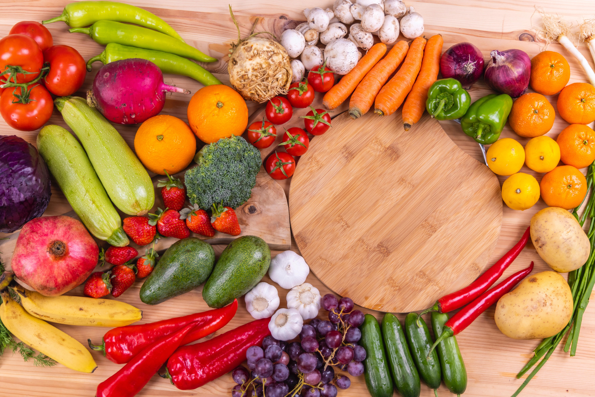
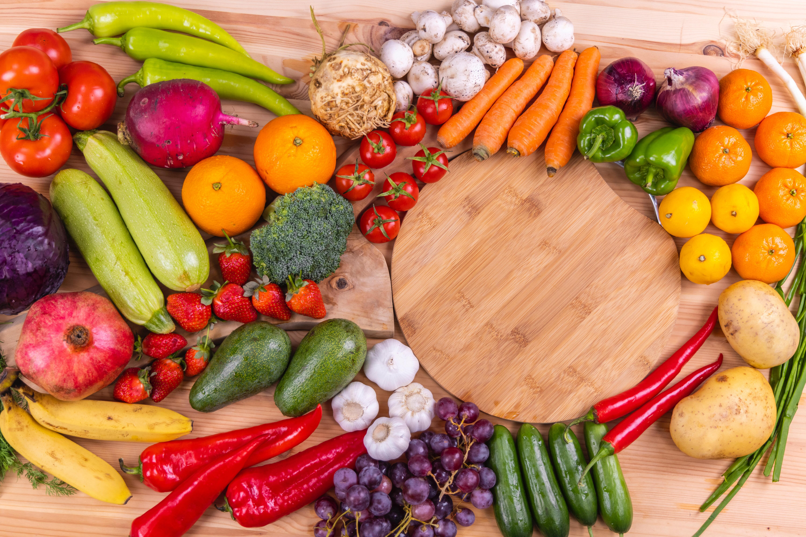

什麼是維生素?
雖然量少，但不足就會有影響

維生素幾乎不含有能夠形成能量或身體組織的成分，而是扮演協助其他營養素順利運用的角色。他負責維持各式各樣的生理機能，並與形成能量與身體組織的代謝有關。
因為需要的量很少而被稱為「微量營養素」，但如果量不夠，就會發生特定的缺乏症。雖然也有部分能在體內合成，但還是不足夠，因次必須從食物中攝取才行。
作為營養素而不可或缺的維生素大致可以分成兩類。
- 脂溶性維生素:維生素A、D、E、K
- 水溶性維生素:維生素B群、C

維生素幾乎不含有能夠形成能量或身體組織的成分，而是扮演協助其他營養素順利運用的角色。他負責維持各式各樣的生理機能，並與形成能量與身體組織的代謝有關。
因為需要的量很少而被稱為「微量營養素」，但如果量不夠，就會發生特定的缺乏症。雖然也有部分能在體內合成，但還是不足夠，因次必須從食物中攝取才行。
作為營養素而不可或缺的維生素大致可以分成兩類。